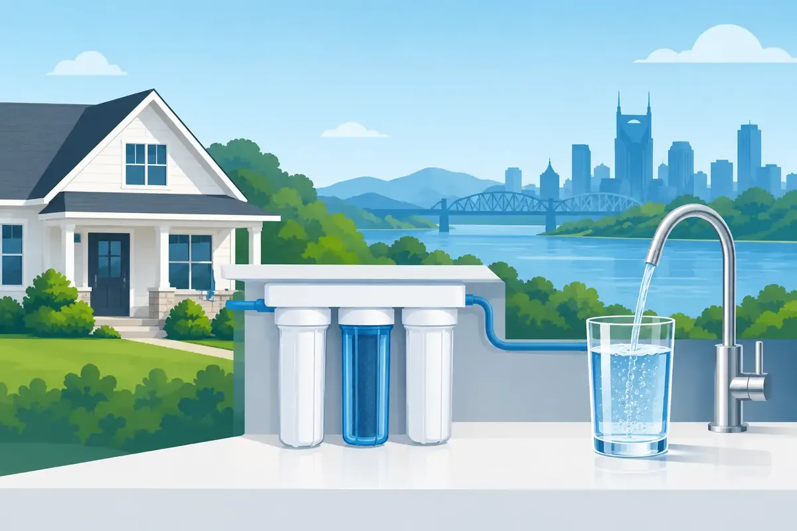

A glass of water can look perfectly clear and still leave a chlorine taste, cloudy ice cubes, white scale on fixtures, or dry-feeling skin after a shower. Water filtration gives Middle Tennessee homeowners a practical way to address those everyday concerns, but the right answer depends on what is actually in the water and where you want improvement.
A pitcher filter may be enough for someone who only wants better-tasting drinking water. A family dealing with sediment, hard-water buildup, or concerns at every faucet may need a whole-house approach. The goal is not to buy the biggest system available. It is to install equipment that solves the right problem, fits the property, and can be maintained with confidence.
Start With Your Water, Not the Equipment
Municipal water and private well water can have very different needs. City water is treated before it reaches your home, but treatment does not always eliminate chlorine taste, sediment picked up in aging pipes, or minerals that affect fixtures and appliances. Well water can vary even more based on local conditions, plumbing materials, and the well itself.
A water-quality test is the sensible first step before selecting a filtration system. It can help identify concerns such as hardness minerals, iron, sediment, pH, chlorine, and certain contaminants. Testing also prevents a common mistake: choosing a system based on a neighbor's experience rather than your own water supply.
Water quality can change. A home on a well may need retesting after flooding, plumbing work, unusual taste or odor, or changes in nearby land use. For city water customers, changes in taste, residue, or water pressure may point to a filtration need, but they can also signal an issue with the home's plumbing. A professional inspection helps separate one from the other.
Common Water Filtration Options
No single system is right for every home. The best choice comes down to the contaminants or conditions found, the home's water usage, available installation space, and the level of maintenance the owner prefers.
Whole-House Filtration
A whole-house filter is installed where water enters the property, so it treats water for showers, laundry, dishwashing, and faucets throughout the home. These systems often target sediment, chlorine, unpleasant tastes, and odors. They can be a strong fit for families who want cleaner water at every fixture instead of treatment at only one sink.
Whole-house filtration can also help protect plumbing components. Sediment can collect in valves, appliance screens, and water-heater systems. Reducing that debris before it travels through the house may help limit wear. Still, filtration is not a cure for corroded pipes, a failing pressure regulator, or a water heater already full of scale. Those problems need their own repair plan.
Reverse Osmosis for Drinking Water
Reverse osmosis, often called RO, is usually installed beneath a kitchen sink and serves a dedicated drinking-water faucet. It uses multiple stages of treatment and a fine membrane to reduce a broad range of dissolved materials. It is a popular option for homeowners who want better drinking water for cooking, coffee, baby bottles, and refillable bottles.
RO systems have trade-offs. They require periodic filter and membrane changes, need room under the sink, and produce some wastewater during operation. They also treat a limited point of use, not the water used in every shower or appliance. For many households, that is exactly the right balance: whole-house treatment for general water quality and RO for drinking water.
Water Softeners and Descaling Systems
Hard water is not always a health concern, but it can be hard on a home. Calcium and magnesium can leave white spotting on glassware, create crust around faucets, make soap harder to rinse, and form scale inside water heaters and pipes. A water softener addresses those minerals through an ion-exchange process.
A traditional softener needs salt and regular attention. It also adds sodium to the water, which may matter to customers following a sodium-restricted diet. A water descaling system is another option for some homes. It can help reduce the way minerals adhere to plumbing surfaces, but it does not remove hardness minerals from the water as a softener does. The difference matters, especially when a homeowner expects the feel and performance of fully softened water.
UV Water Treatment
Ultraviolet treatment uses UV light to address certain microorganisms. It is frequently considered for private wells or properties where microbial safety is a specific concern. UV is not a replacement for sediment filtration, softening, or chemical reduction. In fact, cloudy water can keep UV light from working as intended, which is why pretreatment may be necessary.
A UV system also needs consistent power and routine lamp service. It is a precise solution for a precise need, not a general-purpose answer for every water issue.
Signs Your Home May Need Filtration
Water filtration can be worth investigating when you notice a recurring issue, not just a one-time change after municipal work. Common signs include chlorine taste or odor, visible particles in water, orange or brown staining, frequent scale buildup, cloudy ice, dry hair or skin after bathing, and reduced performance from appliances that use water.
Homeowners should also pay attention to where the issue occurs. If only one faucet has low flow or discolored water, the problem may be a clogged aerator, supply line, fixture cartridge, or localized pipe issue. If it appears throughout the home, testing and whole-house treatment become more relevant.
For commercial properties, filtration decisions often affect more than comfort. Restaurants, offices, rental properties, salons, and other businesses may need to protect ice machines, water heaters, coffee equipment, fixtures, and customer-facing drinking water. A properly sized system should account for peak demand, not just average daily use.
Installation Details That Make a Difference
Good water treatment equipment can underperform when it is poorly installed or incorrectly sized. A plumbing professional should consider water pressure, pipe size, flow rate, drain access, electrical needs for UV equipment, bypass valves, filter access, and the space required for future service.
Sizing is especially important for whole-house systems. A filter that is too small can reduce flow during busy times, such as when someone showers while the dishwasher and washing machine are running. A system that is oversized may cost more than necessary. The right installation should deliver steady water flow without making routine filter changes difficult.
It is also wise to ask where treated water will and will not go. Some homes keep outdoor hose bibs unfiltered to avoid using treated water for irrigation. Others want filtered water at every connection. Neither choice is automatically right. It depends on the system, local conditions, and how the property is used.
Maintain Water Filtration So It Keeps Working
Filters do not last forever, and skipping maintenance can reverse the benefits of a new system. Sediment cartridges can clog, carbon filters become exhausted, RO membranes need replacement, UV lamps lose effectiveness over time, and softeners need salt or other service according to the equipment design.
Keep the system's service schedule somewhere visible and use the correct replacement parts. Changes in water taste, flow, odor, or spotting can be a reminder that maintenance is due, but waiting for symptoms is not always the best plan. Scheduled service is easier on both the equipment and the household.
Angle Stop Plumbing can help Middle Tennessee homeowners and property managers test water concerns, choose the appropriate treatment method, and install equipment with clear, upfront guidance. With 31 years of plumbing experience, the team approaches filtration as part of the larger plumbing system, including the pipes, fixtures, water heater, and appliances the water serves.
Clean, dependable water should not feel like a guessing game. Start with an accurate picture of your water, choose treatment that addresses the real concern, and keep the system maintained so your family or business can enjoy the difference every day.